Počasí, které říká, jak moc si je jisté
Potřebuju bundu, když teď vyjdu ven?
Nimbus odpovídá na tuhle jednu otázku jednoduchými slovy, dřív než otevřeš cokoliv dalšího. U každé odpovědi řekne, jak moc se jí dá věřit. Žádný účet, žádné reklamy, z telefonu nic neodchází.
- Bez účtu
- Bez reklam
- Bez sledování
- Nikdy vymyšlené číslo
Tahle prohlídka ukazuje aplikaci v režimu Uživatel, tak ji používá většina lidí. Nahoře přepni na Expert a uvidíš zdroje, vzorce a délky kroků za každým číslem.
Čteš prohlídku v režimu Expert. Rámečky s čárkovaným okrajem ukazují, co aplikace v režimu Expert přidává: názvy zdrojů, vzorce a délky kroků.
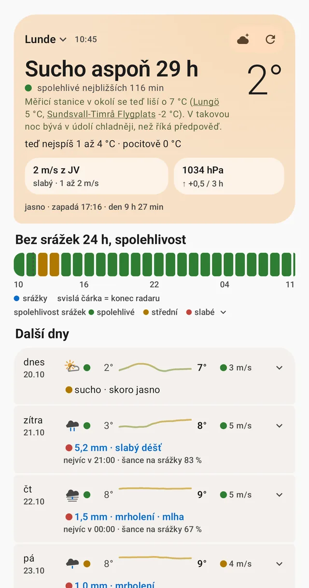
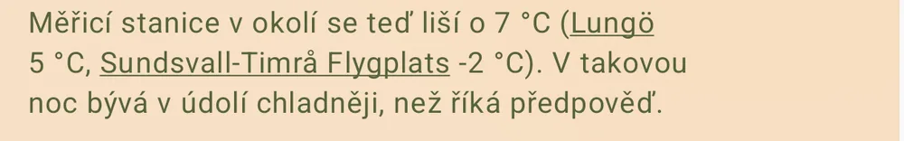
STRUČNĚ
Čím se Nimbus liší.
Osm věcí, které stojí za to znát před prohlídkou. Každá karta otevře svou kapitolu.
Řekne, jak moc si je jistý
U každé odpovědi je tečka, jak moc jí věřit, spočítaná z toho, kolik nezávislých běhů modelu se shoduje. Není to pravděpodobnost deště.
Naměřené, dopočítané, předpovězené
Radarový snímek, hodnota dopočítaná mezi dvěma hodinami modelu a předpověď modelu se vždy ukazují jinak. Naměřený obraz nikdy nevypadá jako předpovězený.
Všimne si, když se teploměry rozcházejí
Když se měřicí stanice kolem tebe liší o 3 stupně a víc, řekne to horní karta a jmenuje nejteplejší a nejchladnější. Klepnutím na jméno otevřeš stanici, podržením surové měření.
Déšť nebo sníh, pět vrstev, polární záře
Radar s posuvníkem času deset hodin zpět a dopředu, jak daleko si zvolíš. Déšť, teplota, vítr, oblačnost a polární záře, déšť odlišený od sněhu a zoom jedním palcem.
Mlha podle hlášení letišť
Graf, jak daleko je vidět, s čárou na jednom kilometru, kde mlha začíná. Nejdřív bere hlášení nejbližšího letiště a říká, jestli je údaj změřený, nebo z modelu.
Ty rozhodneš, co je bunda
Sedm hranic, od čepice a rukavic po větrovku, si posuneš podle sebe. Jsou to jediná čísla v aplikaci, která nejsou naměřená, protože bundové počasí jednoho je tričkové počasí druhého.
Známkuje vlastní předpovědi
Aplikace porovnává svůj odhad deště s tím, co pak ukázal radar, a v režimu Expert ukazuje záznam. Dokud ho není dost, řekne to místo procenta.
Widget a hodinky mluví za stejné místo
Widget i hodinky s Wear OS mají stejné tečky jistoty jako aplikace a mluví vždy za stejné místo. Každé může mít vlastní jazyk.
01 · TEĎ
Nejdřív odpověď. Podrobnosti, když se zeptáš.
Otevřeš aplikaci a horní karta už říká, co přinesou nejbližší hodiny: sucho, déšť, vítr, mlhu. Jedna velká teplota a jedna řádka o tom, jak to bude opravdu cítit.
- Přečti si verdikt - „Sucho aspoň 30 h“ nebo „Déšť za 40 min“, s barevnou tečkou, jak moc mu věřit.
- Podívej se na dalších 24 hodin jako na pás - každá hodina je obarvená podle jistoty předpovědi a je vyznačený konec dosahu radaru.
- Projdi další dny - nejnižší a nejvyšší teplota, vítr, srážky a tečka spolehlivosti pro každý den. Den rozbal pro víc podrobností.
- Stáhni dolů pro obnovení, nebo klepni na šipku. Klepnutím na dlaždici větru nebo tlaku skočíš rovnou na její graf.
Expert přidává
- Pod verdiktem, jak se spolehlivost počítá a proč zhruba tři hodiny dopředu klesá.
- Model za místem, třeba
MET Nordic 1 km, v seznamu míst.
02 · DŮVĚRA
Poctivě, ne sebejistě.
Většina počasí dává každému číslu stejnou klidnou autoritu. Nimbus ne. Když zdroj nemá co říct, řekne to, místo aby ukázal nulu. Když jen odhaduje hodinu mezi dvěma skutečnými, taky to řekne.
Tyhle tři se v obou režimech ukazují vždy jinak. Naměřený obraz nikdy nevypadá jako předpovězený.
Expert přidává
- Spolehlivost je shoda souboru modelů: kolik nezávislých běhů říká totéž. V Česku a Německu je to
ICON-D2, 20 členů, asi dva dny, potomECMWF IFS025, 51 členů. Jinde je to ECMWF. - Není to šance na déšť. Jistý odhad třicetiprocentní šance deště není třicetiprocentně jistý odhad.
- Hodnota, kterou aplikace neumí změřit, se ukáže jako chybějící, nikdy jako nízká spolehlivost.
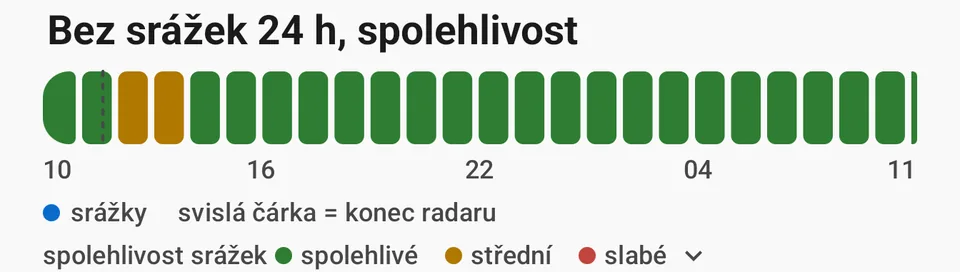
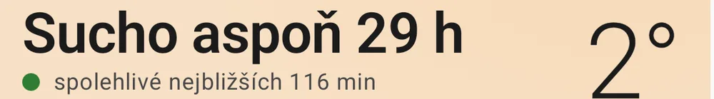
03 · OKOLNÍ STANICE Další verze
„Můj teploměr ukazuje 5, aplikace říká 8.“
Za jasné klidné noci se vzduch může během pár kilometrů lišit o několik stupňů: moře drží pobřeží výš a studený vzduch stéká do údolí. Když se měřicí stanice v okolí liší o 3 stupně a víc, Nimbus to napíše na horní kartě a jmenuje nejteplejší a nejchladnější.
- Klepni na jméno stanice a otevře se stránka státní meteorologické služby s touto stanicí už vybranou.
- Podrž ho a otevře se syrové měření za tím číslem.
- Předpověď nikdy neopravuje. Říká jen, jaká je to noc, takže studená zahrada není překvapení.
Expert přidává
- Aspoň tři stanice do 60 km, každá s měřením z posledních dvou hodin. S menším počtem odpověď není a karta mlčí, místo aby vzduch označila za rovnoměrný.
- Tři stupně jsou stejný práh, který aplikace používá pro „potřebuju bundu, nebo ne“.
- Zdroj: síť stanic SMHI, hodinová měření. Mimo Švédsko zatím odpověď není.
Jména stanic jsou odkazy. Dlouhé podržení vede k samotným datům.
04 · RADAR
Tvar toho, co přichází.
Mapa s časovým posuvníkem. Táhni zpět a uvidíš, kde pršelo, dopředu a uvidíš, kam déšť míří. Vedle naměřeného deště jsou čtyři předpovědní vrstvy a pátá ukazuje polární záři.
- Přehraj, zastav, posouvej. Posuvník sahá až 10 hodin zpět a dopředu tak daleko, jak nastavíš, na severu asi dva dny.
- Vyber vrstvu - srážky, teplota, vítr, oblačnost. Oblačnost jde rozdělit na nízkou, střední a vysokou.
- Déšť nebo sníh. Jedním přepínačem nad mapou oddělíš intenzitu od druhu srážek.
- Čti legendu. Barevná stupnice je přes mapou a říká jednotku. Teplotní stupnice se láme u nuly.
- Zoom jednou rukou. Dvojité klepnutí přiblíží, nebo dvakrát klepni, nech palec dole a táhni.
- Pod mapou věta jednoduchými slovy: „Nejbližší srážky 41 km na sever. Naměřeno radarem. Není to předpověď.“
Expert přidává
- Naměřený obraz je radarová kompozice SMHI se snímky po pěti minutách. Intenzita deště se počítá z odrazivosti vzorcem
Z = 200·R^1.6a nad 55 dBZ je omezená, protože kroupy odrážejí mnohem víc než voda. - Předpovědní vrstvy jsou pole modelu MET, 1 km, kreslené z jejich mapového serveru. Předpovědní radarové snímky zdarma nikdo nepublikuje, takže aplikace nepředstírá, že je má.
- Přední polovina posuvníku je v prvních hodinách dopočítaný radar, pak hodinový model.
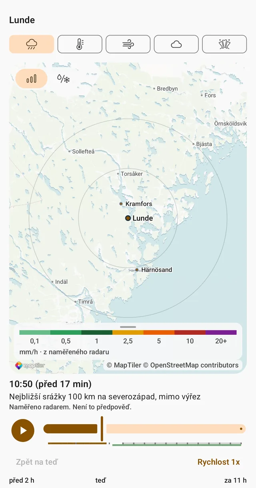
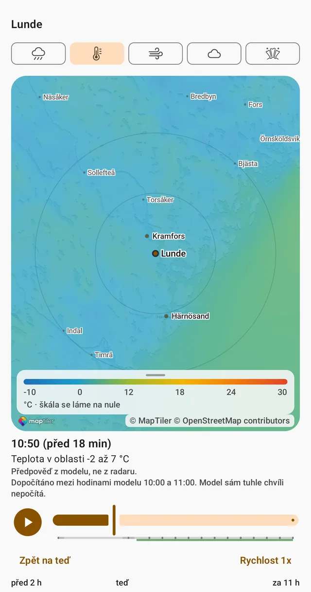
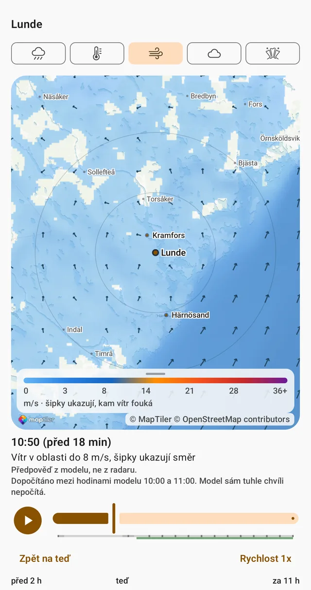
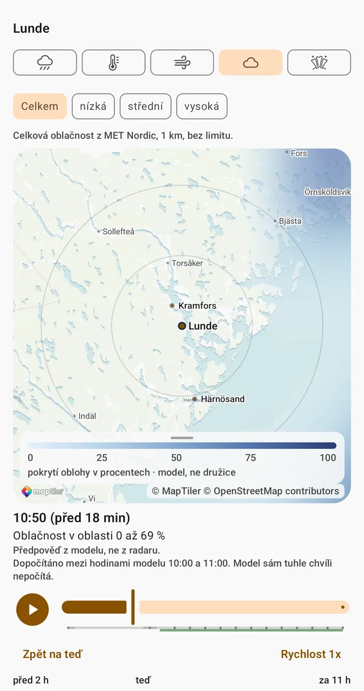
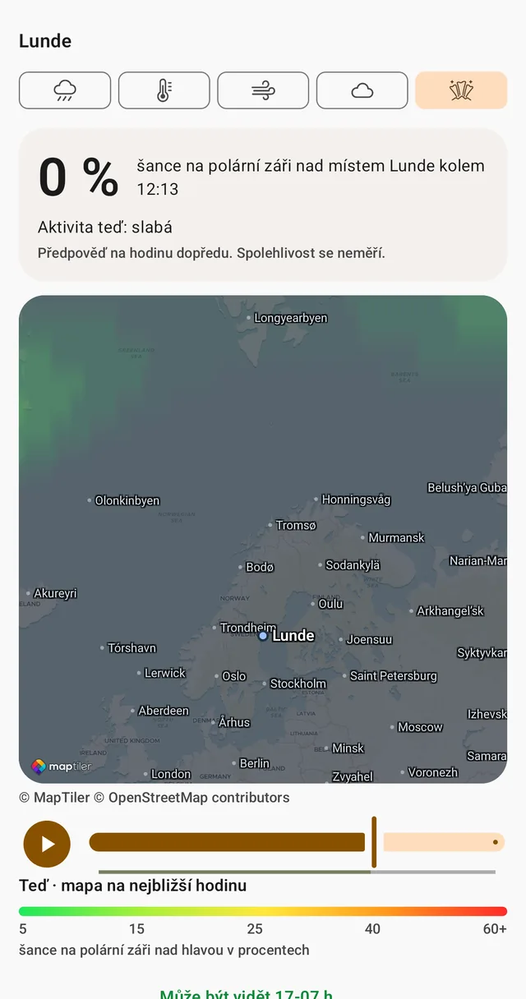
05 · GRAFY
Den jako čára.
Teplota, srážky, vítr a oblačnost, pod sebou, na jedné časové ose. Červená čára značí teď a poznámka říká, jak daleko dozadu data sahají a že starší část je model.
- Vyber okno - 12 hodin, 24 hodin, 3 dny nebo 7 dnů.
- Ukaž jedním prstem a přečteš přesnou hodnotu v ten okamžik.
- Dvěma prsty roztáhni nebo posuň okno. Plochá noc si otevře stupnici z dvaceti stupňů na tři, takže tvar vynikne sám.
- Přicházíš z Teď? Klepnutí na dlaždici větru nebo tlaku tě dovede na její graf.
- Mlha a dohlednost: graf, jak daleko je vidět, s čárkovanou čárou na jednom kilometru, kde mlha začíná. Říká, jestli je údaj změřený na letišti, nebo je z modelu.
Expert přidává
- Řádek nad grafy říká, jak daleko dozadu data sahají a že starší část je model, ne to, co aplikace viděla.
- Osa hodnot se počítá z toho, co je v okně, takže přiblížení nikdy nenechá zploštělou čáru.
- Mlha je dohlednost pod 1000 m. Do přítomnosti je to hlášení METAR nejbližšího letiště do 30 km, se jménem a vzdáleností, dopředu ICON-EU nebo ECMWF IFS. Pole mlhy od MET dvakrát mlhu v údolí minulo a model zachytí jen část, proto je na prvním místě letiště.
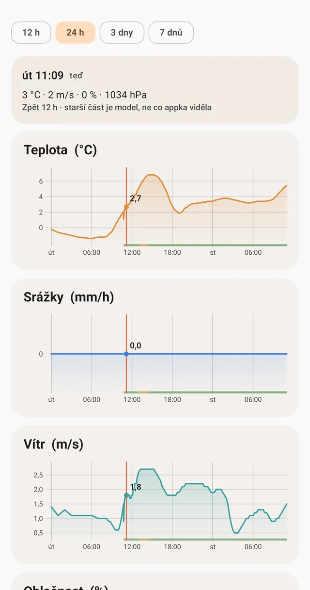
06 · SHRNUTÍ DNE
Tvůj den po částech a co si vzít na sebe.
Jedna obrazovka, která pro dopoledne, poledne, odpoledne a večer říká, co přinese počasí a co si na to obléct. Každou část porovná se stejnou částí včerejška a ukáže rozpětí minulé noci.
- Oblouk slunce s východem, západem a délkou dne a s nejnižším a nejvyšším okamžikem dne.
- Osa od poslední noci do dnešní se značkou pro teď. Každá část má teplotu, srážky, vítr, řádek o oblékání a včerejšek.
- Ranní upozornění v čase, který zvolíš, aby odpověď přišla dřív, než vyjdeš.
- Klepni na část a skočíš na stejný čas v Teď.
Expert přidává
- Včerejší čísla pocházejí z vlastního záznamu aplikace o počasí, které už proběhlo, čteného podle místa. Část bez zaznamenaného měření nezobrazí nic.
- S oprávněním přesného budíku upozornění odejde v zvolenou minutu, jinak během 30minutového cyklu obnovení. Nastavení říká, které je aktivní.
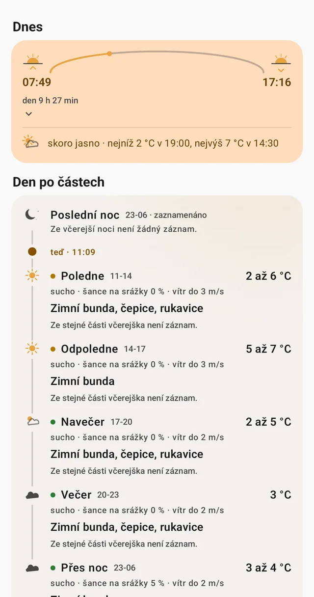
07 · VAROVÁNÍ
Oficiální varování pro každé místo, které máš.
Co platí tam, kde jsi, a u každého tvého místa, ve stejném pořadí jako v Nastavení. „Nic neplatí“ se řekne rovnou a řekne se i, kdo odpovídá.
- Švédsko: varování od SMHI. Česko a Německo: národní služby přes MeteoAlarm.
- Upozornění na blížící se déšť, silný vítr a oficiální varování, aby ti to došlo, i když aplikaci neotevřeš.
Expert přidává
- SMHI publikuje jeden zdroj pro celou zemi. Varování pokrývá nakreslenou oblast, takže aplikace zjišťuje, jestli tvoje místo leží uvnitř.
- Upozornění na vítr používá stejný práh nárazů jako rada k oblékání a drží se zpátky, když si aplikace není dost jistá, aby tě budila.
- Záznam skutečně odeslaných upozornění je tu vidět jen v režimu Expert.
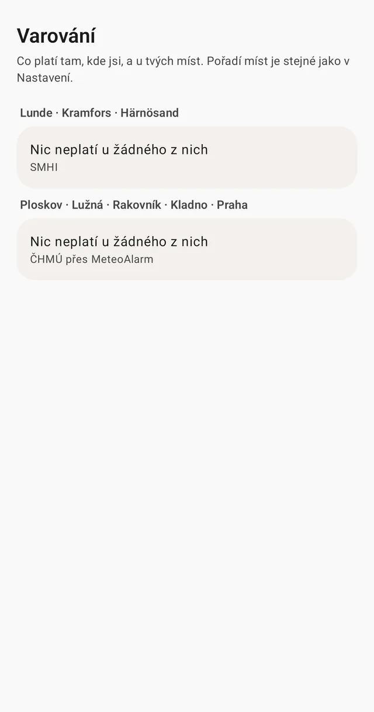
08 · POLÁRNÍ ZÁŘE
Rozsvítí se dnes v noci nebe?
Poslední vrstva na radaru není počasí, ale polární záře. Otevře se na velké noční mapě s ovalem záře a nad ní je šance, že ji nad svým místem uvidíš, jednoduchými slovy.
- Nejdřív jedno číslo: šance na polární záři nad hlavou asi za hodinu a aktivita teď jedním slovem - slabá, střední, silná, velmi silná.
- Další noci, každá na jednom řádku: „Dnes v noci“, „Zítra v noci“, pak podle dne v týdnu, s hodinami, kdy může být vidět.
- Skutečná místa na mapě, abys oval mohl porovnat s městy, která znáš.
Expert přidává
- Data z NOAA SWPC: model OVATION pro oval, index Kp pro aktivitu. Rozsahy aktivity podle NOAA: Kp 0-2 slabá, 3-5 střední, 6-7 silná, 8-9 velmi silná.
- Oval je kreslený plynule. Každá vykreslená hodnota leží mezi čtyřmi zveřejněnými body mřížky. Barvy: zelená od 5 %, žlutá 25, červená 60 a výš.
09 · MÍSTA
Jedno místo, všude.
Vyber místo, o kterém aplikace je, nebo ji nech sledovat tebe. Cokoliv zvolíš, je místo, o kterém mluví obrazovky, widget i upozornění, takže si nikdy neodporují.
- Měj několik míst v pořadí, jaké chceš. Pět českých míst je tam od začátku a Lunde, Kramfors a Härnösand pro švédskou domovskou oblast.
- Sledovat mou polohu a předpověď se přesune s tebou. Vrátíš se do aplikace a zeptá se, kde jsi.
- Žádná vymyšlená jména ulic. Adresa se ukáže jen u přesné polohy, protože název ulice pro zaokrouhlenou polohu by byl vymyšlený.
Expert přidává
- Pod každým místem model, který za ně odpovídá, třeba
MET Nordic 1 km. - Který zdroj mluví za místo, se rozhoduje podle souřadnic ze skutečného pokrytí modelu, nikdy podle země.
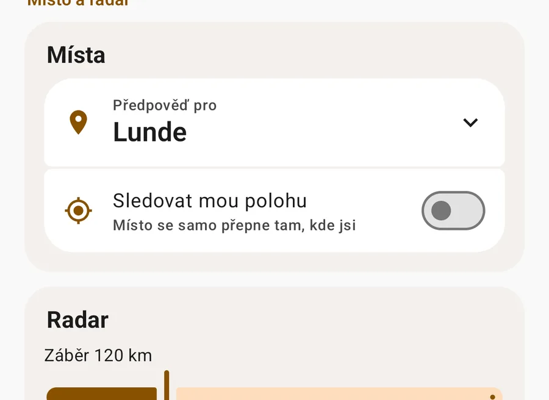
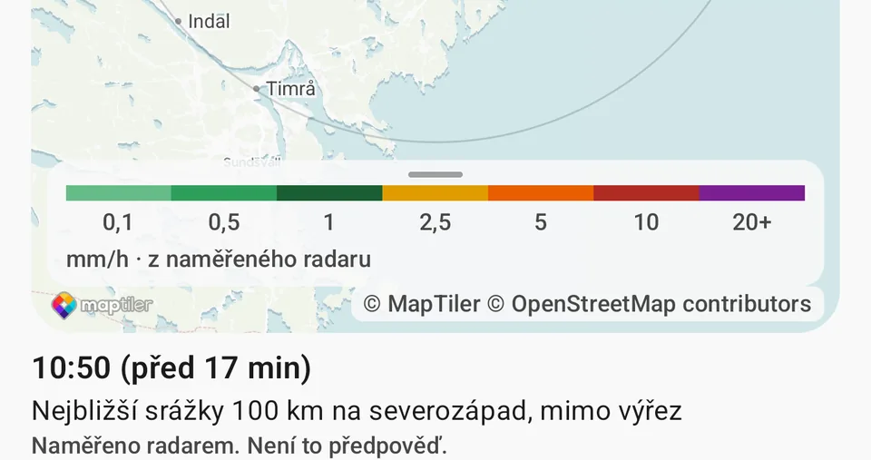
10 · BEZ OTEVÍRÁNÍ APLIKACE
Odpověď tam, kam se už díváš.
První úkol aplikace je odpovědět dřív, než si obuješ boty. K tomu je widget a hodinky, mapa je až třetí.
Widget na ploše
Čas, datum a počasí na první pohled: teplota teď, jak se cítí a nejbližší hodiny, každá s tečkou spolehlivosti. Vyber si styl, velikost textu, místo, spodní řádek a co otevře klepnutí.
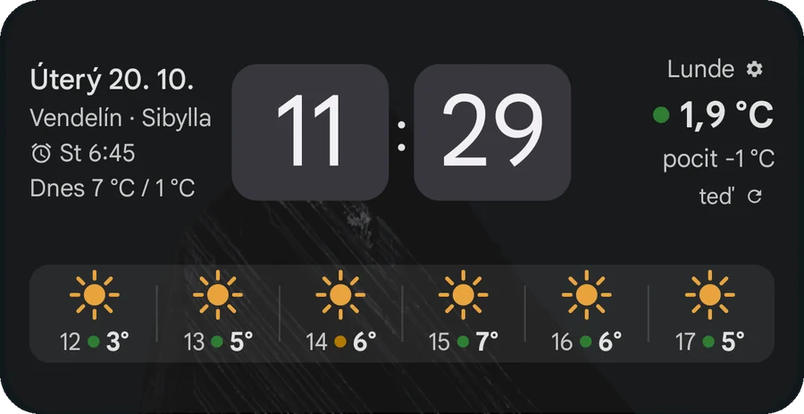
Widget na ploše ve velkém stylu s hodinami.
Expert přidává
Widget a upozornění používají stejné místo jako aplikace. Jejich text nemá jednodušší dvojče, je stejný v obou režimech.
Hodinky s Wear OS
Odpověď, teplota, vítr, hodiny a týden dopředu, varování a slunce, plus dlaždice a komplikace pro ciferník. Data posílá telefon. Stránky si uspořádáš v Nastavení.
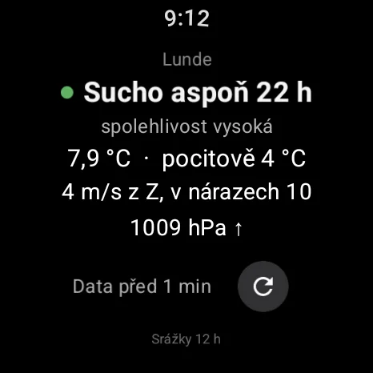
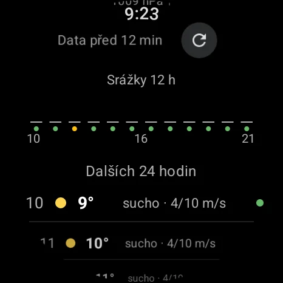
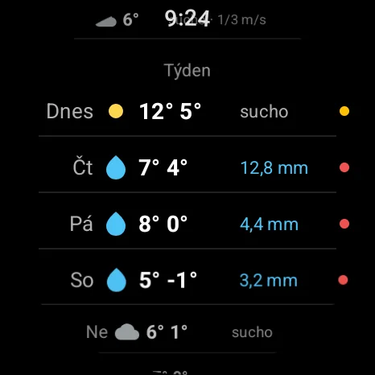
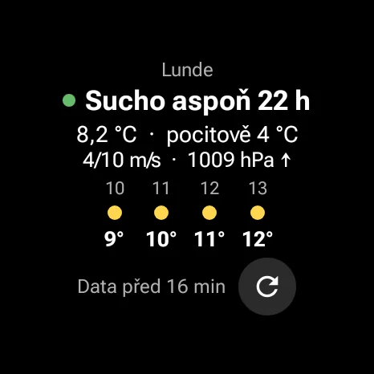
Expert přidává
Hodinky se otevřou na Teď, pak následují Hodiny, Týden a Varování v pořadí, které nastavíš. Stránka Varování se objeví jen tehdy, když se o varováních pro místo něco ví.
11 · ZDROJE
Odkud se bere co.
Jedna obrazovka vypisuje každý zdroj, co poskytuje a který odpovídá za místo, na které se díváš. Když zdroj neodpoví, aplikace to řekne.
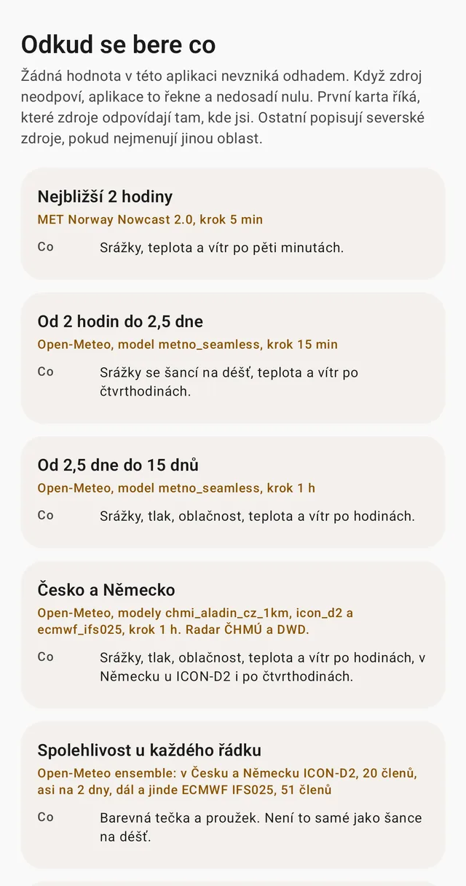
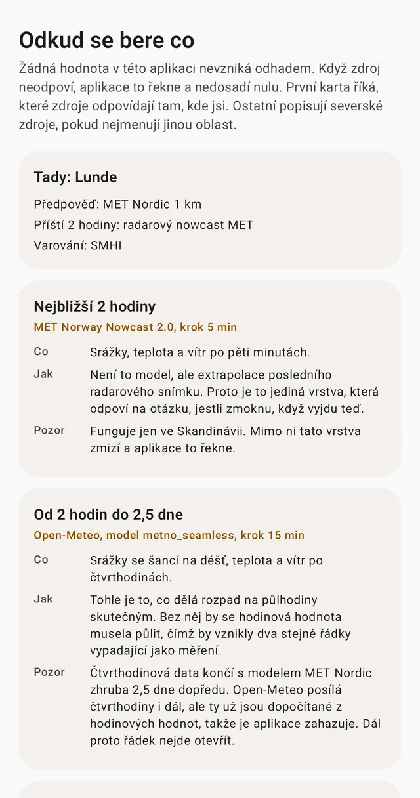
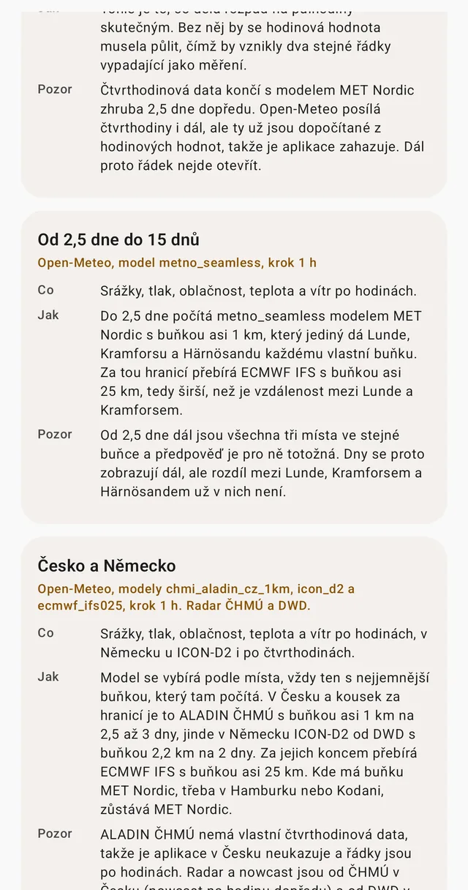
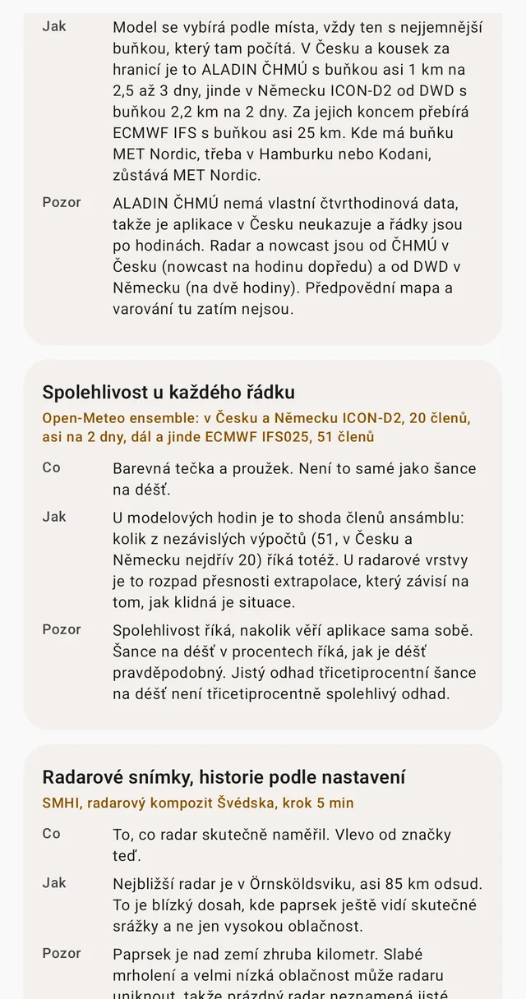
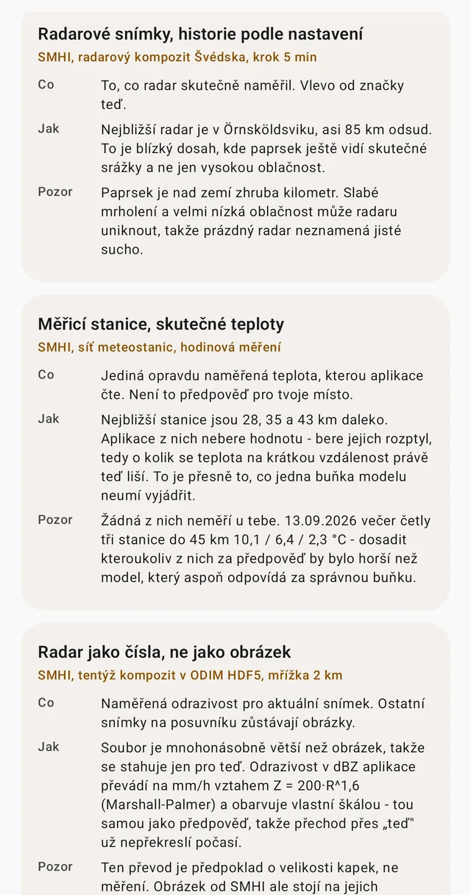
Nahoře přepni na Expert a uvidíš, jak se každé číslo počítá a co který zdroj říct nedokáže.
Každá karta má Co, Jak a Pozor. Pozor je ta poctivá část: co zdroj říct nedokáže.
12 · KDE FUNGUJE
Nejlepší tam, kde vznikla, dobrá i za hranicemi.
Nimbus vznikl pro dvě oblasti a tam je nejpřesnější. Umí ale i zbytek Severu, celé Česko a Německo.
Sever
Velmi jemná buňka předpovědi, radarový nowcast po pěti minutách na dvě hodiny dopředu a oficiální varování od SMHI ve Švédsku. Nejpřesnější kolem Kramforsu a Härnösandu.
Expert přidává
MET Nordic, buňka asi 1 km. Za několik dní, kam jemné modely sahají, přebírá ECMWF a aplikace řekne, odkdy.
Česko
Vlastní velmi jemný model a radar české meteorologické služby, s vlastním nowcastem na hodinu dopředu. Ploskov, Lužná, Rakovník, Kladno a Praha jsou v seznamu míst od začátku.
Expert přidává
CHMI ALADIN, asi 1 km, po hodinách. Varování přes MeteoAlarm.
Německo
Model a radar německé meteorologické služby, s nowcastem na dvě hodiny dopředu.
Expert přidává
DWD ICON-D2 s buňkou 2,2 km, v Německu po čtvrthodinách. Radarový nowcast RADVOR.
Aplikace mluví česky, anglicky a švédsky, jazyk se přepíná přímo v aplikaci.
13 · UŽIVATEL A EXPERT
Tolik detailu, kolik chceš.
Tatáž aplikace ve dvou úrovních. Jeden přepínač v Nastavení, pod „Úroveň detailů“. Stránka, kterou čteš, má stejný přepínač nahoře.
Uživatel
Ukáže, co potřebuješ k rozhodnutí.
- Jednoduchá slova a jedna odpověď na obrazovku
- Tečky spolehlivosti a věty
- Poznámky, které říkají, na jaký druh obrazu se díváš
Expert
Přidá práci za číslem.
- Názvy zdrojů a modelů
- Vzorce a délky kroků
- Poznámky, jak se věci počítají, a výhrady
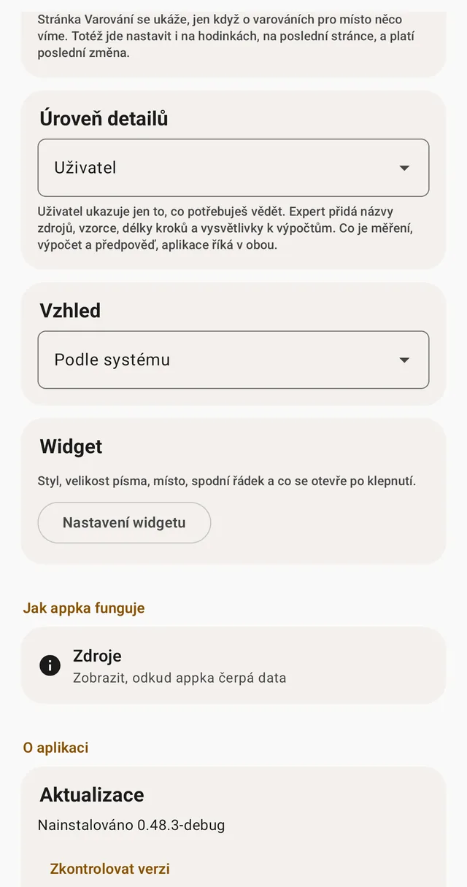
14 · NASTAVENÍ
Nastav si ji po svém.
Všechno, co si v aplikaci můžeš nastavit, v pořadí, v jakém je řadí Nastavení. Většinou je to přepínač nebo výběr z několika hodnot.
Místo a radar
- MístaNajdi město podle jména, přidej, kde jsi teď, přetažením změň pořadí a vlastní místo odeber odsunutím do strany, s možností vrátit. Nebo nech aplikaci sledovat tvou polohu.
- Záběr radaruJak široký výřez mapy se radar otevře, od 20 do 400 km.
- Historie na posuvníkuJak daleko zpět posuvník času sahá: 1, 2, 3, 6 nebo 10 hodin.
- Jak daleko dopředuKolik dopředné půlky posuvníku chceš: žádnou, 2, 6 nebo 12 hodin, nebo všechno až do 60 hodin. Kratší rozsah znamená, že se dá trefit jednotlivá hodina.
Expert přidává
Snímky jsou po pěti minutách. Bez dopředné části ukazuje posuvník jen to, co radar naměřil, nic dopočítaného ani z modelu.
Domovská obrazovka
- Hodinový modelUkaž nebo skryj hodinový model na obrazovce Teď. Radarovou vrstvu skrýt nejde, je to jádro aplikace.
- Rozsah u hodnotVedle teploty a větru pásmo, ve kterém se hodnota nejspíš pohybuje.
- Posouvání značky v grafuTažením po pruhu srážek vybereš čas a seznam dnů pod ním na něj skočí. Při scrollování se pruh přilepí nahoře.
- Počasí na titulní kartěKarta nahoře nese to, co popisuje: kapky v dešti, vítr, který přes ni jde, teplý přísvit při jasnu. Kresba je slabá, aby text zůstal čitelný. Vypnuto je karta hladká.
Expert přidává
Pásmo je 10. až 90. percentil od MET, ne odhad aplikace.
Jak se oblékat
Sedm hranic rozhoduje, co rada řekne. Jsou to jediná čísla v aplikaci, která nejsou naměřená, takže je posouváš ty.
- Pět teplotních hranicPod kterou chceš i čepici a rukavice, zimní bundu, bundu nebo mikinu, lehkou bundu a čepici. Každá se zastaví o sousední, takže se nemůžou překřížit.
- Déšť a vítrNad kolika mm deště chceš něco nepromokavého, od 0 do 5 mm, a nad jakým nárazem větrovku, od 3 do 30 m/s.
- Co rozhodujePocitová teplota, tedy s větrem a vlhkostí, a bere se nejnižší v dané části dne. Déšť a vítr se posuzují zvlášť.
Oznámení a pozadí
- Stahování na pozadíKaždou půlhodinu, jen když je síť. Drží widget aktuální, umí varovat na déšť a zapisuje, jaké počasí bylo, takže grafy sahají čím dál víc zpátky. Vypnuto aplikace stahuje, jen když ji otevřeš.
- Výjimka z optimalizace baterieAplikace ukáže, jestli optimalizace baterie stahování odkládá, a požádá o výjimku. Bez ní funguje, jen widget a zápis historie mají díry.
- Denní shrnutíRanní oznámení s dnem po částech. Čas se nastavuje zvlášť pro pracovní dny a víkend. S povolením přesného budíku přijde přesně v tu minutu, jinak v rámci půlhodiny stahování.
- UpozorněníBlížící se déšť, silný vítr, varování SMHI a denní shrnutí mají každé vlastní kanál v nastavení oznámení telefonu, takže jedno jde ztlumit bez ostatních.
Vzhled a jazyk
- JazykPodle telefonu, čeština, angličtina nebo švédština. Změní se hned, bez restartu.
- Jazyk widgetu a hodinekKaždé může mluvit jiným jazykem než aplikace, nebo prostě jako aplikace.
- Stránky hodinekHodinky se vždy otevřou na Teď. Vyber, které z Hodin, Týdne a Varování následují a v jakém pořadí. Totéž jde nastavit na hodinkách a platí poslední změna.
- Úroveň detailů a vzhledUživatel, nebo Expert, stejný přepínač jako nahoře na téhle stránce. Vzhled se řídí systémem, nebo zůstane světlý či tmavý.
Widget
Widget má vlastní obrazovku nastavení se dvěma záložkami, Vzhled a Klepnutí. Otevře se z karty v Nastavení nebo z widgetu samotného.
- Místo a stylMísto aplikace, nebo jiné z tvých. Styl: podle tapety, podle systému, tmavé nebo světlé pozadí. Podle tapety dá tmavé pozadí na tmavou tapetu a světlé na světlou.
- Velikosti a průhlednostVelikost písma, velikost hodin a průhlednost pozadí. Průhlednost se zastaví tam, kde by nejslabší text přestal být čitelný.
- SvátkyČeský a švédský kalendář, zaškrtnuté v pořadí, v jakém se mají ukázat, nebo žádný.
- Spodní řádek a co zobrazitPás šesti hodin s jistotou, nebo věta na zbytek dne. Budík, tlačítko obnovit, pocitovou teplotu, tlak a jeho vývoj i odpověď pod hodinami lze každé zobrazit nebo skrýt.
- Co otevře klepnutíHodiny, minuty, budík a datum otevřou každé aplikaci, kterou si vybereš, ve výchozím stavu hodiny a kalendář. Počasí teď, pás hodin a věta otevřou v Nimbusu Teď, Radar, Grafy nebo Shrnutí.
Jak appka funguje
Jen v režimu Expert.
- Která předpověď tady vycházíVlastní odhad deště z radaru proti odhadu národní služby, na stejné minuty a se známkou od téhož radaru. Dokud záznamu není dost, nic nerozhoduje a na obrazovce zůstává MET.
- PřesnostJak přesná aplikace tady byla, měřeno proti tomu, co radar skutečně ukázal, s počtem porovnání. Dokud čísla nejsou, řekne, že záznam teprve začala.
- ZdrojeTlačítko otevře obrazovku Zdroje s tím, odkud je které číslo.
Nahoře přepni na Expert a uvidíš tu ještě poslední skupinu: jak aplikace známkuje vlastní předpovědi.